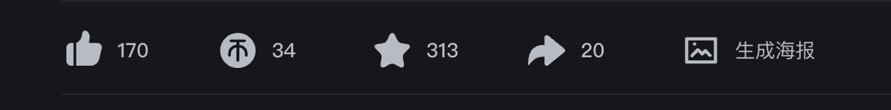

<!doctype html><html lang="zh-CN"><meta charset="utf-8"><meta name="viewport" content="width=device-width,initial-scale=1"><title>海报入口 · 原生工具栏对照</title><style>
*{box-sizing:border-box}body{margin:0;background:#151619;color:#c6c8d0;font:14px/1.65 -apple-system,BlinkMacSystemFont,"PingFang SC",sans-serif}main{max-width:1200px;padding:64px 24px 140px;margin:auto}header{margin-bottom:46px}h1{font-size:23px;font-weight:500;color:#eee;margin:0 0 10px}p{margin:0;color:#8f949d}h2{font-size:13px;font-weight:500;color:#9197a1;margin:20px 0 12px}.row{position:relative;width:100%;aspect-ratio:1154/144;background:#202125;container-type:inline-size}.row img{display:block;width:100%}.replacement{position:absolute;left:74.4%;top:14%;width:25.6%;height:64%;display:flex;align-items:center;padding-left:1.5%;background:rgb(28.77 30.37 34.53);color:#c5c7ce}.replacement button{appearance:none;display:flex;align-items:center;gap:1.38cqw;padding:0;margin:0;border:0;background:none;color:inherit;font:400 2.25cqw/1.4 "PingFang SC","Microsoft YaHei",sans-serif;cursor:pointer;white-space:nowrap}.replacement svg{width:4.85cqw;height:4.85cqw;flex:none}.replacement button:hover{color:#00aeec}.replacement button:focus-visible{outline:2px solid #00aeec;outline-offset:4px}.notes{margin:20px 0 48px;max-width:700px;color:#a7acb6}footer{position:fixed;bottom:24px;left:50%;transform:translateX(-50%);border:1px solid #515761;border-radius:999px;background:#fff;color:#181a1d;box-shadow:0 8px 32px #0007;display:flex;align-items:center;gap:18px;padding:8px 12px;white-space:nowrap}footer button{border:0;background:#edf0f3;color:#24262b;border-radius:50%;width:32px;height:32px;font-size:18px;cursor:pointer}footer span{font-size:13px;min-width:170px;text-align:center}.tip{margin-top:28px;font-size:12px}body[data-variant=A] .replacement{display:none}
</style><main><header><h1>让「生成海报」融入原生工具栏</h1><p>只比较入口图形；保留「生成海报」文案及同排位置。</p></header><h2 id="label"></h2><div class="row"><div class="replacement"><button title="生成海报 · 外观原型" aria-label="生成海报"><span id="glyph" style="display:flex"></span>生成海报</button></div></div><p class="notes" id="notes"></p><h2>原始参照</h2><div class="row"></div><p class="tip">外观原型，无生成或复制副作用。左右方向键可切换方案。</p></main><footer><button id="prev" aria-label="上一个方案">←</button><span id="switchlabel"></span><button id="next" aria-label="下一个方案">→</button></footer><script>
// THROWAWAY: three entry glyphs compared in the user's existing toolbar context.
const variants={
A:{name:'当前 · 空心画框',notes:'当前入口：图形偏细且内部留白较多，与左侧实心图标的视觉重量不同。',svg:''},
B:{name:'实心竖版海报',notes:'推荐：用竖版海报轮廓与图片、文字留白表达海报。实心面积更接近投币、收藏等原生图标，圆角也保持克制。',svg:'<svg viewBox="0 0 28 28" aria-hidden="true"><path fill="currentColor" fill-rule="evenodd" d="M7 2h14a2 2 0 0 1 2 2v20a2 2 0 0 1-2 2H7a2 2 0 0 1-2-2V4a2 2 0 0 1 2-2Zm2 16a1 1 0 0 0 0 2h10a1 1 0 0 0 0-2H9Zm0 4a1 1 0 0 0 0 2h6a1 1 0 0 0 0-2H9Zm0-7h10l-3.4-4.7-2.2 2.7-1.7-2.1L9 15Zm3-7a1.5 1.5 0 1 0-3 0 1.5 1.5 0 0 0 3 0Z"/></svg>'},
C:{name:'实心横版图片',notes:'更接近通用图片入口：采用实心横幅与镂空山形，轮廓更宽、更饱满，和原生分享箭头的视觉面积接近。',svg:'<svg viewBox="0 0 28 28" aria-hidden="true"><path fill="currentColor" fill-rule="evenodd" d="M4 4h20a2 2 0 0 1 2 2v16a2 2 0 0 1-2 2H4a2 2 0 0 1-2-2V6a2 2 0 0 1 2-2Zm1 16h18l-6-8-4.5 5.5L9 13l-4 7Zm6-11a2 2 0 1 0-4 0 2 2 0 0 0 4 0Z"/></svg>'}
};const keys=Object.keys(variants);let key=new URL(location.href).searchParams.get('variant')||'B';function render(){if(!variants[key])key='B';document.body.dataset.variant=key;label.textContent=key+' — '+variants[key].name;switchlabel.textContent=label.textContent;notes.textContent=variants[key].notes;glyph.innerHTML=variants[key].svg;const u=new URL(location.href);u.searchParams.set('variant',key);history.replaceState(null,'',u)}function step(delta){key=keys[(keys.indexOf(key)+delta+keys.length)%keys.length];render()}prev.onclick=()=>step(-1);next.onclick=()=>step(1);addEventListener('keydown',e=>{if(e.target.closest('input,textarea,[contenteditable]'))return;if(e.key==='ArrowLeft')step(-1);if(e.key==='ArrowRight')step(1)});render();
</script></html>
